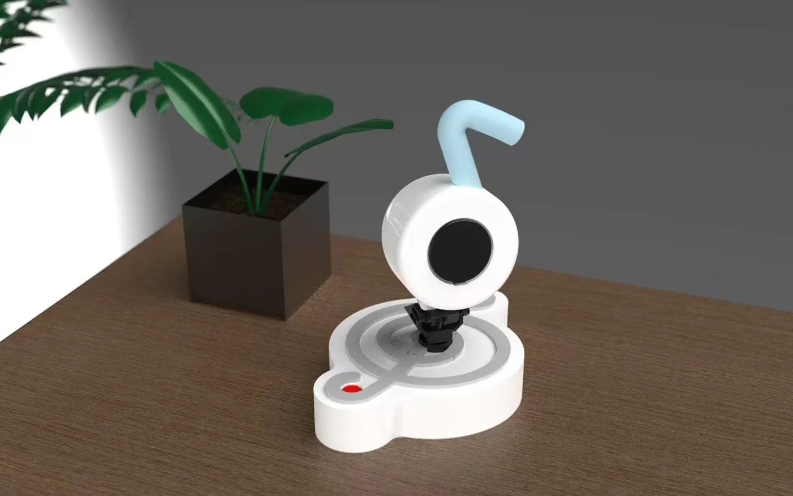

Starting with the learner
As a pianist, I noticed how difficult it can be for beginners to recognise mistakes while practising alone. I explored a companion that connects notes on a screen with the keys in front of the learner.
02 / LUMIKEY / MUSIC COMPANION
A little help at the piano.
Lumikey explores how a physical companion, musical notation, and projected guidance can make independent piano practice easier to understand.

THE STORY
As a pianist, I noticed how difficult it can be for beginners to recognise mistakes while practising alone. I explored a companion that connects notes on a screen with the keys in front of the learner.
The project combines a screen interface, keyboard projection, and a body with servo-driven movement. The portfolio documents practice and test modes, note-detection logic, hardware choices, and the development of the enclosure.
I worked through user journeys, interface development, Rhino modelling, servo structures, and exterior design. The videos below show the interface and projection experiments; the portfolio brings the design process together.